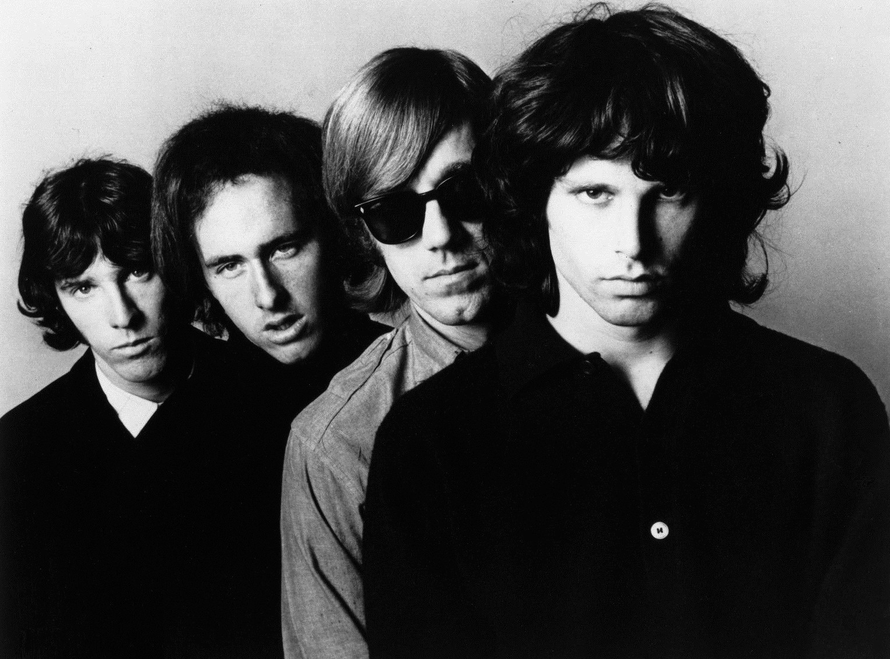
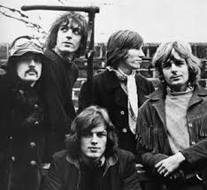

The Doors
The Doors fue una influyente banda de rock estadounidense formada en Los Ángeles en 1965.
Canciones favoritas:
- Light My Fire
- The End
- Riders on the storm
- When the music over
- Ghost Song
Pink Floyd
Pink Floyd fue una influyente banda británica de rock formada en 1965, conocida por su estilo único que combina rock psicodélico, progresivo y experimental.
Canciones favoritas:
- Dogs
- Any Colour You Like
- Echoes
- Interestellar Overdrive
The Beatles
The Beatles fue una de las bandas más influyentes y exitosas de la historia de la música, formada en Liverpool, Inglaterra, en 1960. Estaba compuesta por John Lennon, Paul McCartney, George Harrison y Ringo Starr.

Canciones favoritas:
- While My guitar Gently Weeps
- Strawberry Fields Forever
- Somenthing
- I Want You(She's So Heavy)